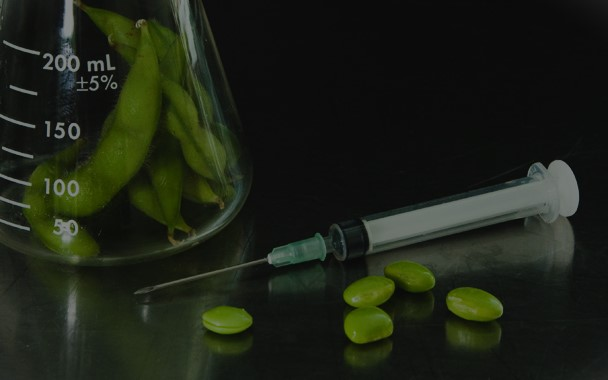

GMOs: Feeding the World or Endangering Our Health?
Maria Clarissa Macario
SOSCITECH
For a quarter of a century, genetically modified organisms, or GMOs, have been at the center of public debate globally. They represent the promise of a better agriculture and food-delivery future to many while for others this invention is a source of danger to human health. While GMOs improve crop yields and increase resistance to pests and diseases, with a tremendous improvement in nutritional content, many people see them as a sure way of filling the gaps of food and feeding a fast-growing world population. The scientific progress of GMOs has moved ahead; however, questions about the effect of GMOs on human health, the environment, and social structures keep on rising to generate intense debate and ethical dilemmas.
Proponents of GMOs claim that it increases food production and enhances food security, especially in countries suffering from hunger and malnutrition. It is GMOs designed to be drought, extreme temperature, and poor soil conditions tolerant would thrive in areas where traditional crops failed to grow, hence offering hope in areas suffering from food scarcity. In addition, engineering crops to be resistant to pests and diseases could be a potential benefit of GMOs that reduces the use of chemical pesticides, hence saving farmers money, with reduced impacts of the environment with pesticide residues.
For example, Bt cotton and corn resistance to pests have successfully reduced pesticide application in many countries to both the farmer and the ecosystem.
Benefits go beyond only yield increase and resistance to pests. And biotechnology has made it possible to fortify staple crops with respect to nutrition, such as the "Golden Rice" that has been engineered to produce beta-carotene, a precursor to vitamin A, in the fight against vitamin A deficiency, where rice is the staple food of many regions. In this regard, GMOs can be considered not only a way of enhancing the production volume but also the quality, finally enhancing general public health.
Advertisement

TimeTouch : "Relive Your Best Moments."
However, there are quite deep concerns about the safety of GMOs and their consequences in human health for long run-it is now argued by some critics of GM crops. The vast majority of studies thus far conducted have not successfully established any adverse health effect of GMOs. However, as it is a relatively new technology, long-term studies are, for now, in a somewhat primitive stage. Most consumers and health advocates remain afraid of the new technology, believing that the full effects of consuming genetically modified foods might not be known for quite a number of decades. This has added to the lack of confidence people have in GMOs toward possible allergic reactions, new proteins, or unintended effects of the editing process of genes. The precautionary principle that warns that there is a need to exercise caution where there are scientific uncertainties leads critics of GMOs to demand tighter controls and additional testing before GMOs can be released onto the global food supply.
Other issues are environmental impacts, assuming health effects are not the main concern. "Gene flow" may be the most critical criticism-where GMO crops cross-pollinate with wild relatives or non-GMO crops and potentially spread undesirable modified genes in ways not intended. But it also raises concerns over biodiversity. Such genetically homogeneous crops might squeeze out and reduce the diversity of traditional plant species. Not to mention, the excessive application of herbicide-tolerant GMO crops has introduced so-called "superweeds" that are resistant to commonly used herbicides; as such, farmers are soon to demand stronger chemicals to control these weeds.
The debate adds another dimension involving socioeconomic or ethical consequences for GMOs. Many biotechnology companies, for example, Monsanto recently acquired by Bayer, have patented many GMO seeds, making proprietary rights over how it will be used. This confers on a few companies in the world all the powers and control over major components of the world's food supplies, and that needs to be addressed. Small farm operations, particularly in developing countries, are likely at disadvantage as it remains dubious whether they can compete with the large agribusiness enterprises that charge highly for patented seeds and the technology involved for them to use. In this regard, the dependence of farmers on GMO seeds, often they cannot reuse seed stock from one year to another because of legal constraints, tends to put the farmers in a cycle of dependency while eroding the traditions of traditional agriculture as well as fostering economic inequality.
Advertisement

FlexiSight : Perfect Vision, Anytime, Anywhere.
Ethics in GMO Research GMOs will also introduce issues of access and equity to the debate. Is it moral to allow biotech companies to take advantage of profit where need exists for the world's poorest? Does God allow life forms to be patented and commodify genetic resources that have existed freely as part of public domain? Questions like these draw out paradoxes between innovation and equity, throwing dilemmas such as maybe GMOs are simply not made available equitably, and so while one becomes empowered, another ends up behind.
In this debate, therefore, regulators, scientists, and policymakers must walk the tightrope of innovation and public health on social equity and environmental considerations. Robust regulatory frameworks are necessary for ensuring that GMOs are thoroughly subjected to relevant safety and environmental impact tests before they could be released for large-scale use. While it goes without saying that the establishment of trust is paramount, it also means transparency and public involvement in accomplishing that will be on the agenda.
While the promise of GMOs as a means of combating food insecurity and agricultural productivity, however cogent it may seem, is hardly open to debate. The way forward, however, will have to be done with circumspection, wholly taking into account the potential risks and unforeseen consequences while committing to ensuring that the benefits of this new technology are equitably shared by society as a whole. Only then will we really know whether GMOs will feed the world or pose unforeseen dangers to our health and the earth.
DIFFERENCE OF ENVIRONMENTAL ISSUE AND SOCIAL ISSUE
Scientists studying about climate change have demonstrated, Over the past 200 years of climate change research, scientists have proven that nearly all of global warming is from human activities. The greenhouse gases developed from these activities-primarily carbon dioxide and methane-are warming the earth far faster than ever in the last two millennia. As much as some of the world's major thoughts...
GENE THERAPY RESEARCH
Gene therapy and stem cell research can potentially change the medical research landscape by opening up diseases previously thought to be incurable for investigation and interference. Such promise, however, is accompanied by a set of ethical and social considerations that call for further scrutiny. The most vital question pertains to ethical considerations would be the concept of informed consent and should assume foremost importance so patients are...
Nanotechnology’s Great Power:Balancing Innovation for a Responsible Future.
As nanotechnology advances, its capacity to transform various sectors such as medicine, energy and materials science becomes more distinct. Considering the innovative drug delivery systems that precisely target cancer cells; they exemplify the remarkable potential of this field. However, as Uncle Ben articulated in a Spiderman film, "with great power comes great responsibility." The swift advancement...